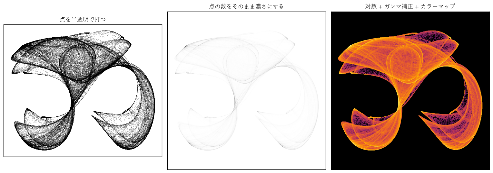
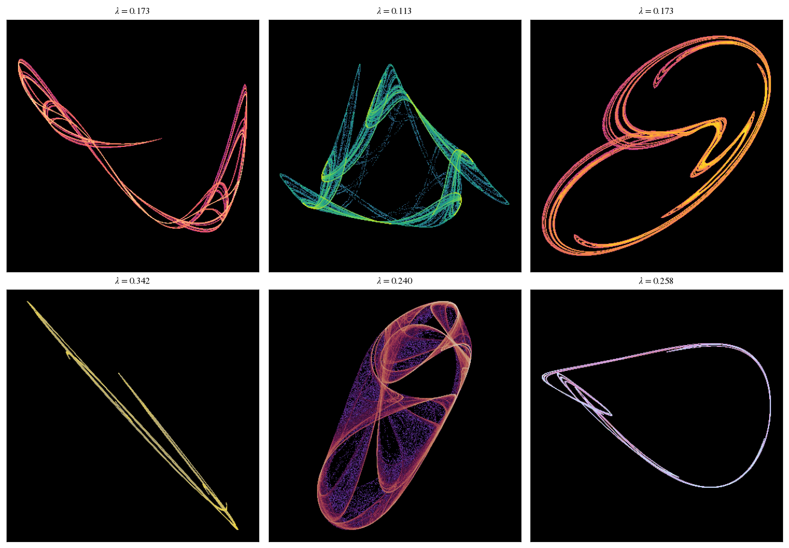
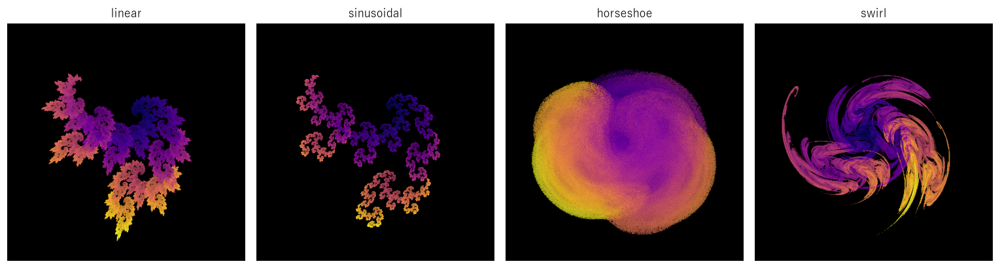
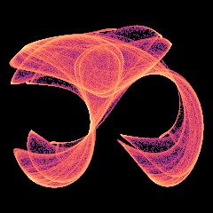

第 12 章 ジェネラティブアートへの応用
この章では、これまでに学んだ力学系、カオス、フラクタルの知識を、ジェネラティブアートとして見栄えのする画像を作るために使う。題材そのものは第 6 章のアトラクタや第 8 章の IFS と同じだが、描き方を工夫するだけで、印象は大きく変わる。点群を画像に変換する方法、面白い形を自動的に探す方法、フラクタル・フレーム、アニメーション、計算の高速化を順に扱う。
点の集まりから画像へ
ストレンジアトラクタや IFS のアトラクタを描くとき、第 6 章や第 8 章では、計算した点を 1 つずつ打った。この方法では、点の多い部分はすぐに真っ黒になり、それ以上の濃淡を表せない。アトラクタ上の軌道の訪れやすさ（密度）は、場所によって何桁も違うので、その違いを表現するには工夫が必要である。
密度のヒストグラム
まず、画像の各画素に入った点の数を数える。これは 2 次元のヒストグラムであり、NumPy の histogram2d で計算できる。画像の縦の向き（上の行ほど \(y\) が大きい）に合わせるため、最後に行の順序を反転する。
25def density(x: Array, y: Array, size: int, margin: float = 0.05) -> Array:
26 """点の集まりを size × size の画素に振り分け、各画素に入った点の数を返す（上の行ほど y が大きい）."""
27 x0, x1 = float(x.min()), float(x.max())
28 y0, y1 = float(y.min()), float(y.max())
29 span = max(x1 - x0, y1 - y0) * (1.0 + 2.0 * margin)
30 cx, cy = (x0 + x1) / 2.0, (y0 + y1) / 2.0
31 edges_x = np.linspace(cx - span / 2.0, cx + span / 2.0, size + 1)
32 edges_y = np.linspace(cy - span / 2.0, cy + span / 2.0, size + 1)
33 hist, _, _ = np.histogram2d(y, x, bins=(edges_y, edges_x))
34 result: Array = hist[::-1]
35 return result
トーンマッピング
点の数をそのまま濃淡に変換すると、最も密度の高いわずかな画素だけが濃く表示され、ほかはほとんど見えなくなる（図 54 の中央）。そこで、点の数 \(h\) を次のように変換する。
対数をとることで、何桁にもわたる密度の違いを、0 から 1 の範囲に圧縮する。さらに \(1/\gamma\) 乗（\(\gamma > 1\)）するガンマ補正（gamma correction）で、暗い部分を持ち上げる。このように、広い範囲の値を表示できる範囲に収める変換をトーンマッピング（tone mapping）という。最後に、明るさをカラーマップで色に変換する。
38def tone_map(hist: Array, gamma: float = 2.2) -> Array:
39 """点の数を 0 から 1 の明るさに変換する.
40
41 点の数は場所によって何桁も違うので、まず対数を取って幅を縮め、
42 最後にガンマ補正（1/gamma 乗）で暗い部分を持ち上げる。
43 """
44 level = np.log1p(hist) / np.log1p(hist.max())
45 result: Array = level ** (1.0 / gamma)
46 return result
47
48
49def colorize(level: Array, cmap: str, background: tuple[float, float, float] = (0.0, 0.0, 0.0)) -> Array:
50 """明るさをカラーマップで色に変換し、点のない画素を背景色にした RGB 画像を返す."""
51 rgb = plt.get_cmap(cmap)(level)[..., :3]
52 alpha = np.clip(level * 4.0, 0.0, 1.0)[..., None] # 点の少ない画素は背景に溶け込ませる
53 result: Array = alpha * rgb + (1.0 - alpha) * np.array(background)
54 return result
55
56


図 54 同じクリフォード・アトラクタ（200 万点）の 3 つの描き方
図 54 の右図では、アトラクタの層が重なり合う様子や、軌道が集中するひだの線が、明暗として浮かび上がっている。左図のように点を打つ方法では、点の数を増やすほど黒い部分が広がるだけだが、密度を数える方法では、点の数を増やすほど滑らかで細かい画像になる。
色の付け方
カラーマップの選び方で、作品の印象は大きく変わる。次のような点に気を付けるとよい。
viridis、magma、infernoなどの知覚的に均一なカラーマップは、値の変化が明るさの変化として自然に見える。密度のような量の表示に向いている。twilightなどの周期的なカラーマップは、最大値と最小値が同じ色になる。第 9 章の滑らかな着色のように、値を何周も色に割り当てるときに使う。背景を黒にし、密度の低い画素を背景に溶け込ませると、光で描いたような印象になる。白い背景に暗い色で描くと、インクで描いたような印象になる。
密度以外の量で色を付ける方法もある。たとえば、各点を計算したときの反復の番号、点の移動の速さ、IFS で選んだ写像の番号などを色に割り当てると、同じ形でも違う構造が見えてくる。後で説明するフラクタル・フレームは、選んだ写像の番号で色を付ける。
パラメータの自動探索
パラメータを持つ写像では、パラメータを適当に選ぶと、多くの場合、軌道は固定点や周期軌道に落ち着く。多項式の写像では、無限大に発散することも多い（三角関数だけでできたクリフォード・アトラクタは有界なので発散しない）。面白い形のストレンジアトラクタになるパラメータは一部である。そこで、物理学者のスプロットは、パラメータをランダムに選び、リアプノフ指数を計算して、カオス的なものだけを残す方法を提案した。
ここでは、より一般的な 2 次の写像を使う。
12 個の係数を、\(-1.2\) から 1.2 までの 0.1 刻みの値からランダムに選ぶ。候補ごとに、次の条件で判定する。
3000 回反復しても発散しない。
最大リアプノフ指数が正である（カオス的である）。数値誤差による誤判定を避けるため、サンプルでは 0.05 より大きいことを条件にした。
軌道が 1 点に縮まらず、ある程度の広がりを持つ。
リアプノフ指数は、第 5 章で説明した方法で求める。わずかに離れた 2 つの点を同時に動かし、1 回ごとに距離の伸び率の対数を足し合わせ、距離を元の大きさに戻す。4000 個の候補を NumPy の配列でまとめて計算する。
69def search_attractors(n_candidates: int = 4000, n_found: int = 6, seed: int = 2026) -> list[tuple[Array, float]]:
70 """ストレンジアトラクタを持つ 2 次写像の係数を探し、(係数, リアプノフ指数) の一覧を返す.
71
72 係数は -1.2 から 1.2 までの 0.1 刻みの値からランダムに選ぶ（J. C. Sprott の方法）。
73 候補ごとに、わずかに離れた 2 つの点を同時に動かし、距離の伸び率の対数の平均から
74 リアプノフ指数を推定する。距離は毎回もとの大きさに戻す（再規格化）。
75 """
76 rng = np.random.default_rng(seed)
77 coef = rng.integers(-12, 13, size=(12, n_candidates)) / 10.0
78 x = np.full(n_candidates, 0.05)
79 y = np.full(n_candidates, 0.05)
80 xe, ye = x + 1e-6, y.copy()
81 lyap = np.zeros(n_candidates)
82 alive = np.ones(n_candidates, dtype=bool)
83 xmin = np.full(n_candidates, np.inf)
84 xmax = np.full(n_candidates, -np.inf)
85 n_steps, transient = 3000, 500
86 with np.errstate(over="ignore", invalid="ignore"):
87 for n in range(n_steps):
88 x, y = quadratic_map(coef, x, y)
89 xe, ye = quadratic_map(coef, xe, ye)
90 alive &= np.isfinite(x) & (np.abs(x) < 1e6) & (np.abs(y) < 1e6)
91 d = np.hypot(xe - x, ye - y)
92 d = np.where(alive & (d > 0), d, 1e-6)
93 if n >= transient:
94 lyap += np.log(d / 1e-6)
95 xmin, xmax = np.minimum(xmin, x), np.maximum(xmax, x)
96 # 2 つの点の距離を 1e-6 に戻す
97 xe = x + (xe - x) * 1e-6 / d
98 ye = y + (ye - y) * 1e-6 / d
99 x = np.where(alive, x, 0.0)
100 y = np.where(alive, y, 0.0)
101 lyap /= n_steps - transient
102 # 発散せず、リアプノフ指数が正で、1 点に縮まらない（ある程度の広がりを持つ）ものを残す
103 good = np.nonzero(alive & (lyap > 0.05) & (xmax - xmin > 0.1))[0]
104 return [(coef[:, i], float(lyap[i])) for i in good[:n_found]]
見つかったアトラクタのうち、最初の 6 つを 図 55 に示す。係数とリアプノフ指数は次のとおりである。
1: λ = 0.173, 係数 = [-1.1, -0.7, +0.3, +1.0, +0.8, +0.4, +0.2, +0.8, +0.0, -1.1, -0.7, +1.1]
2: λ = 0.113, 係数 = [-1.0, -0.9, +0.1, -0.4, -0.9, -0.3, -0.9, +0.4, +0.1, -0.1, -0.7, +0.7]
3: λ = 0.173, 係数 = [+0.2, +0.4, -0.8, -1.1, -1.0, -0.7, -0.6, +0.7, -1.1, -0.4, +0.6, +0.7]
4: λ = 0.342, 係数 = [+0.8, -0.1, -1.2, +0.5, -0.4, -0.1, -1.0, +0.3, +0.7, -0.6, +1.2, +0.7]
5: λ = 0.240, 係数 = [+0.9, +1.0, -0.9, -0.1, -0.2, -1.0, +0.5, -0.9, +1.2, +0.2, -1.0, -1.2]
6: λ = 0.258, 係数 = [+0.8, +0.6, -0.8, -0.4, -0.9, -0.4, -0.3, +0.3, +0.7, -0.9, -0.1, +1.1]


図 55 自動探索で見つかったアトラクタ（\(\lambda\) はリアプノフ指数）
スプロットによると、2 次の写像では、ランダムに選んだ係数のうち、ストレンジアトラクタになるのはごく一部（数 % 程度）である。条件を満たした候補も、見た目の良さはさまざまである。画像を大量に生成して人が選ぶほか、フラクタル次元（第 10 章）が一定の範囲にあるものを残すなど、条件を追加して絞り込むこともできる。乱数の種（シード）を記録しておけば、気に入った作品をいつでも再現できる。
フラクタル・フレーム
フラクタル・フレーム（fractal flame）は、1992 年にスコット・ドレーブスが考案した、IFS を発展させた描画法である。オープンソースのソフトウェア Electric Sheep や、Apophysis などのツールで使われ、炎や絹のような質感の画像を生み出す。第 8 章のカオスゲームとの主な違いは、次の 3 点である。
バリエーション：アフィン変換の後に、非線形の関数（バリエーション）を施す。正弦関数で折り返す、極座標の角度を変える、渦巻き状に回転させる、などの関数が数十種類用意されている。
色の座標：各写像に色の値 \(c_k\) を割り当て、点が持つ色の値 \(c\) を、写像を適用するたびに \(c \leftarrow (c + c_k)/2\) と更新する。点の色は、直前に選ばれた写像の履歴を反映する。
対数密度による描画：画素ごとに点の数と色の値の合計を記録し、対数をとった密度で明るさを、色の値の平均で色合いを決める。
本書のサンプルは、この考え方の要点だけを実装した簡易版である。
59def flame(variation: Variation, n_points: int = 1_500_000, n_walkers: int = 5000, size: int = 400,
60 span: float = 4.0, seed: int = 1) -> tuple[Array, Array]:
61 """画素ごとの点の数と、色の番号の平均を返す（span は描く範囲の一辺の長さ）."""
62 rng = np.random.default_rng(seed)
63 x = rng.uniform(-1.0, 1.0, n_walkers)
64 y = rng.uniform(-1.0, 1.0, n_walkers)
65 c = rng.random(n_walkers)
66 hist = np.zeros(size * size)
67 color_sum = np.zeros(size * size)
68 for n in range(n_points // n_walkers + 20):
69 k = rng.integers(0, len(AFFINES), n_walkers)
70 a, b, cc, d, e, f = AFFINES[k].T
71 x, y = variation(a * x + b * y + e, cc * x + d * y + f)
72 c = (c + COLORS[k]) / 2.0
73 if n < 20:
74 continue # 最初の 20 回は、アトラクタに近づくまでの過渡状態として捨てる
75 col = np.floor((x / span + 0.5) * size).astype(np.int64)
76 row = np.floor((0.5 - y / span) * size).astype(np.int64)
77 ok = (col >= 0) & (col < size) & (row >= 0) & (row < size)
78 idx = row[ok] * size + col[ok]
79 hist += np.bincount(idx, minlength=size * size)
80 color_sum += np.bincount(idx, weights=c[ok], minlength=size * size)
81 with np.errstate(invalid="ignore"):
82 mean_color = np.where(hist > 0, color_sum / hist, 0.0)
83 return hist.reshape(size, size), mean_color.reshape(size, size)
図 56 は、同じ 3 つのアフィン変換に、4 種類のバリエーションを組み合わせたものである。linear は変形しない（ふつうの IFS と同じ）場合で、木の葉が集まったような自己相似な形になる。sinusoidal では各座標が正弦関数で折り返され、形が細かくちぎれた小さな島の連なりになる。horseshoe は角度を 2 倍にして曲げるので、全体が丸くまとまる。swirl は原点からの距離に応じて回転させるので、渦巻きの形が生まれる。


図 56 同じアフィン変換に 4 種類のバリエーションを組み合わせたフラクタル・フレーム
本格的なフラクタル・フレームでは、複数のバリエーションを重み付きで足し合わせる、最後に全体に施す変換（ファイナル変換）を加える、1 つの画素を細かく分けて計算して滑らかにする（スーパーサンプリング）、などの工夫をする。詳しくは、ドレーブスとレッケイスの論文を参照してほしい（付録 C）。
アニメーション
パラメータを少しずつ変えながら画像を描き、つなげるとアニメーションになる。図 57 は、クリフォード・アトラクタのパラメータを 2 組の値の間で往復させたものである。


図 57 パラメータを変化させたクリフォード・アトラクタ
169def create_animation(path: Path) -> None:
170 """クリフォード・アトラクタのパラメータを 2 組の間で往復させる GIF アニメーションを保存する."""
171 # 2 組のパラメータは、補間の途中のどのコマでもアトラクタが周期軌道につぶれないことを確かめて選んだ
172 start = np.array([-1.4, 1.6, 1.0, 0.7])
173 end = np.array([-1.6, 1.6, 0.7, 1.0])
174 n_frames = 48
175 frames = []
176 for k in range(n_frames):
177 s = 0.5 - 0.5 * np.cos(2.0 * np.pi * k / n_frames) # 0 → 1 → 0 と滑らかに往復する
178 p = (1.0 - s) * start + s * end
179 x, y = attractor_points(clifford, (p[0], p[1], p[2], p[3]), n_orbits=2000, n_steps=150)
180 rgb = colorize(tone_map(density(x, y, 240)), "magma")
181 frames.append(Image.fromarray((rgb * 255).astype(np.uint8)).quantize(colors=64))
182 frames[0].save(path, save_all=True, append_images=frames[1:], duration=80, loop=0, optimize=True)
パラメータを補間するときは、次の点に注意する。
滑らかな補間：補間の割合 \(s\) を時間に比例させると、往復の折り返しで動きが急に止まって見える。\(s = (1 - \cos(2\pi k/n))/2\) のようにすると、端でゆっくり、中央で速く動き、自然な往復になる。
分岐の通過：パラメータを変える途中で分岐（第 4 章）を通ると、アトラクタの形が急に変わったり、周期軌道に落ち着いて点だけになったりする。アニメーションの途中でアトラクタが消えてしまう場合は、補間の経路を変えるか、すべてのコマでリアプノフ指数が正であることを確かめるとよい。サンプルの 2 組のパラメータも、補間の途中のどのコマでもアトラクタが消えないことを確かめて選んだ。
表示範囲：サンプルでは、コマごとにアトラクタ全体が収まるように表示範囲を決めている。範囲が変わると全体が伸び縮みして見えるので、固定した範囲で描く方法もある。
GIF は 256 色までしか使えないので、Pillow の quantize で 64 色に減らしてから保存している。より高画質な動画が必要なら、PNG の連番画像を書き出し、動画の編集ソフトや ffmpeg などのツールで動画に変換するとよい。
計算の高速化
Python のループは遅いので、数百万点を計算する場合は工夫が必要になる。本書のサンプルでは、主に次の 3 つの方法を使った。
多数の軌道の同時計算：1 本の軌道の計算は、1 つ前の点が決まらないと次の点を計算できないので、ベクトル化できない。しかし、アトラクタ上の点を集めるだけなら、多数の初期値からの短い軌道を同時に計算すればよい。過渡状態を捨てれば、どの軌道もアトラクタ上を動くので、1 本の長い軌道と同じ密度の分布が得られる（多くのカオス的な系で成り立つエルゴード性による）。第 6 章のエノン写像、第 8 章のカオスゲーム、本章のアトラクタは、この方法で計算している。
計算の済んだ要素を除く：第 9 章の脱出時間や第 10 章の吸引領域の計算では、結果が確定した点を配列から除き、残った点だけを計算した。境界の近くの少数の点だけが長い計算を必要とする場合に効果が大きい。
NumPy の集計関数：画素ごとの点の数は、
histogram2dやbincountで一度に数えられる。
これ以上の速度が必要な場合は、Python のコードを機械語に変換する Numba などのライブラリや、GPU で多数の点を並列に計算するシェーダー（GLSL など）を使う方法がある。特に、マンデルブロ集合や反応拡散系のように、各画素の計算が独立している（または近傍だけに依存する）問題は、GPU の並列計算と相性が良い。
作品づくりのヒント
最後に、本書の内容を作品づくりに生かすためのヒントをまとめる。
パラメータ空間を地図として見る：分岐図、リアプノフ指数のグラフ、マンデルブロ集合は、パラメータ空間の「地図」である。面白い形は、規則的な振る舞いとカオスの境目の近くに多い。マンデルブロ集合の境界や、リアプノフ指数が 0 に近い場所を探すとよい。
規則を組み合わせる：IFS の写像にバリエーションを加える、反応拡散系のパラメータを場所によって変える、ジュリア集合の \(c\) を時間とともに動かすなど、本書の題材は自由に組み合わせられる。
解像度と点の数：密度描画では、画素数に対して十分な数の点を計算しないと、ざらついた画像になる。印刷用の大きな画像では、点の数を画素数の数十倍以上にするとよい。
再現性：乱数の種、パラメータ、反復回数を作品と一緒に記録しておく。カオス的な系では、計算の順序や浮動小数点数の精度が変わると個々の軌道は変わるが、アトラクタの形と密度の分布はほとんど変わらない（第 5 章のシャドウイング）。
まとめ
アトラクタや IFS は、点を打つ代わりに画素ごとの密度を数え、対数とガンマ補正で明るさに変換すると、層の重なりやひだが表現できる。
パラメータをランダムに選び、リアプノフ指数が正のものを残すことで、ストレンジアトラクタを自動的に探せる。
フラクタル・フレームは、IFS に非線形のバリエーションと色の座標を加え、対数密度で描く方法である。
多数の軌道を同時に計算する、計算の済んだ要素を除く、などの工夫で、Python でも数百万点の計算を実用的な時間で行える。